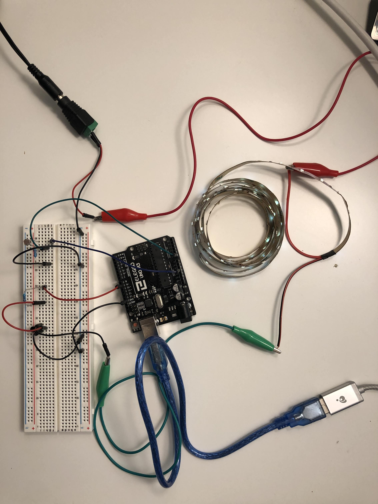
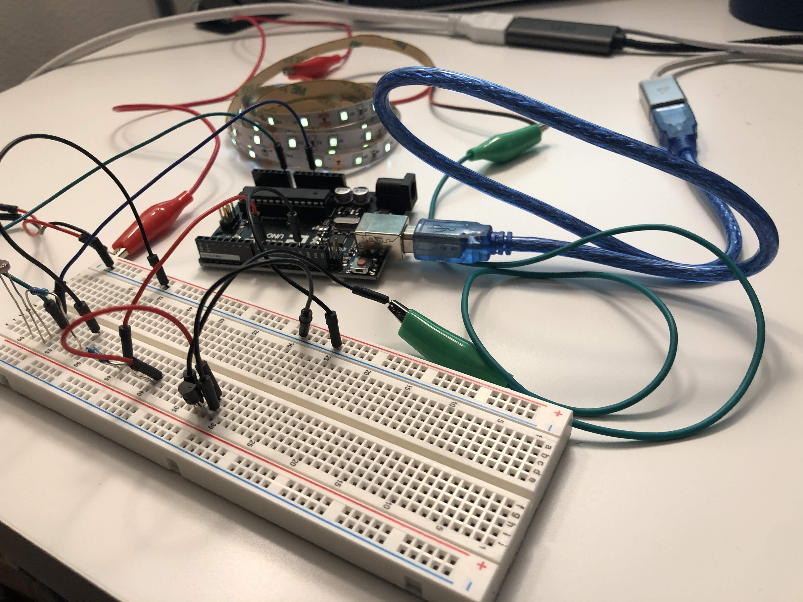
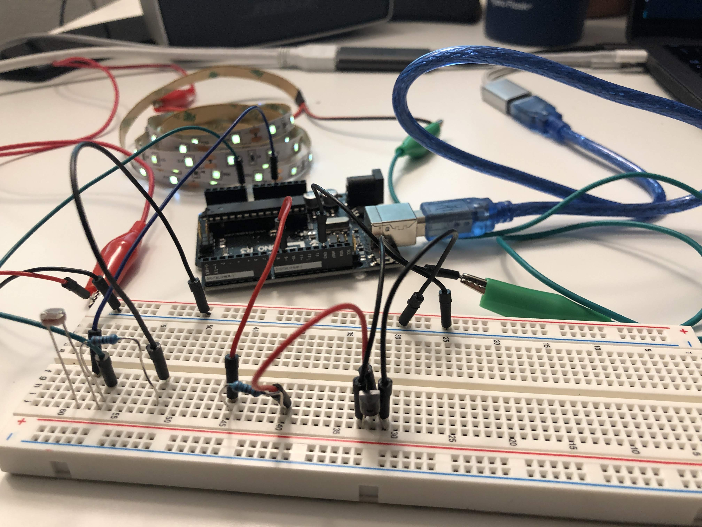
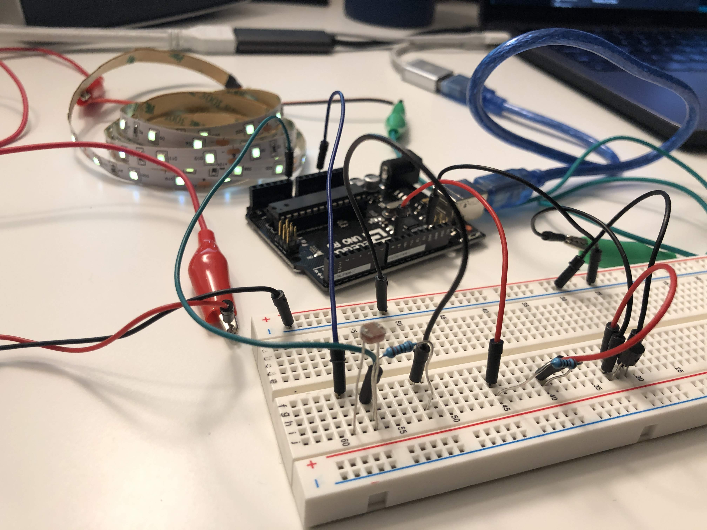
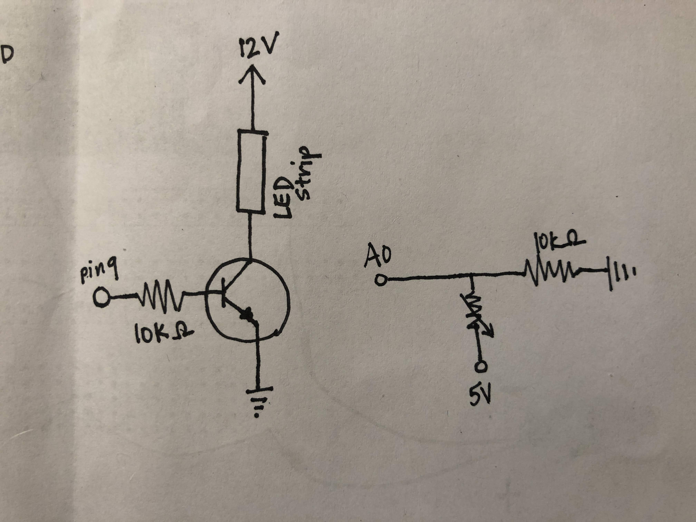
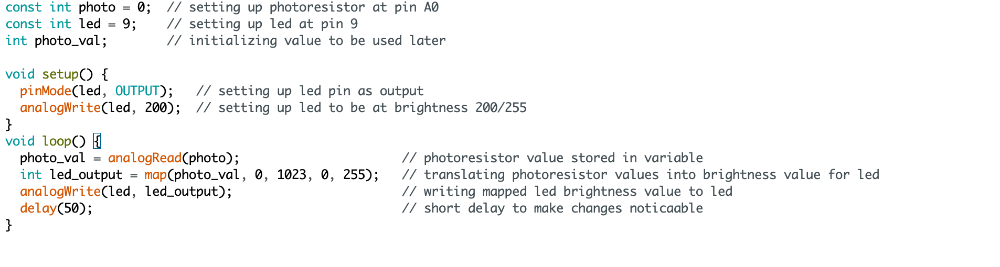

Circuit demo:

This is a gif showing how the circuit works when assembled. The LED strip gets brighter when the photoresistor detects a shadow or less light.
Circuit diagram:

This is an image with details regarding how the circuit is assembled.
Here are some images of how the circuit looks assembled:
  
Schematic:

This is a schematic of my circuit. Calculations and justifications for resistor choices are described below:
Math:
Calculating current for LED strip I used:
3.6V drop per white LED. 3 LEDs per segment of LED strip.
3.6V * 3 = 10.8V drop over the three LEDs.
12V (from power) = 10.8V (drop from LED) + V drop of resistor --> Resistor = 1.2V drop
Resistor on LED segment says '241' --> 240 Ohm resistor.
1.2/240 = 0.005A of current per LED segment
I used 102 LEDs, or 34 segments --> 0.005A * 34 = 0.17A of current for my LED strip.
For the photoresistor, I used a 10k ohm resistor to make sure the current was fully grounded when the switch is off.
Code Snippet:

I used analogWrite() to change the brightness of the LED strip when the photoresistor detects a shadow or less light.